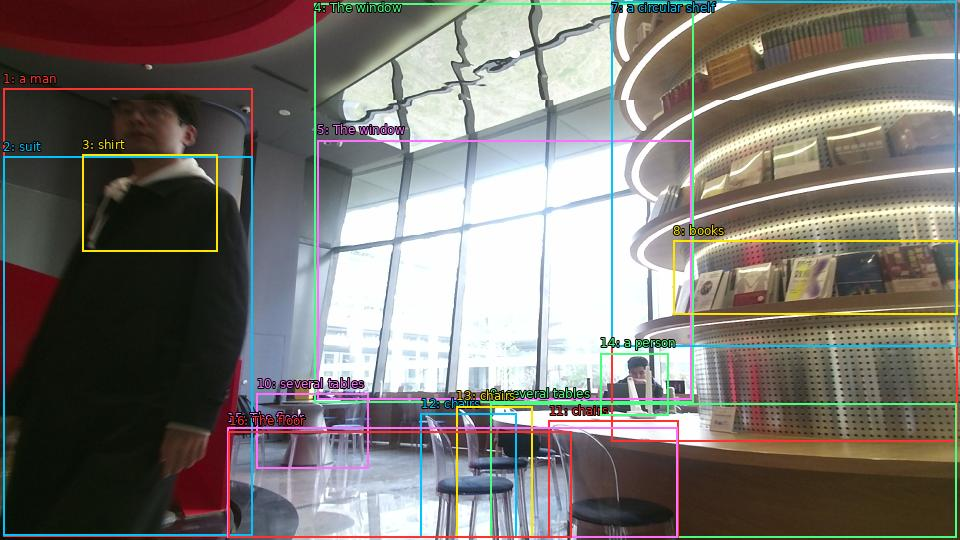

The image shows a man standing in front of a large window in a modern office space. He is wearing a black suit and a white shirt, and appears to be deep in thought. The window is made of glass, allowing natural light to enter the space. On the right side of the image, there is a circular shelf with books and other office supplies neatly arranged on it. In the background, there are several tables and chairs, and a person sitting at one of the tables. The floor is tiled, and the overall atmosphere of the space is bright and airy.

Original · Caption raw · Grounding raw · Koordinate
Številke so lokalni ID regije. Dolge slikovne oznake so skrajšane; spodaj so celotne fraze. Napovedane regije se lahko prekrivajo ali opisujejo skupine.
| ID | Celotna fraza | bbox xyxy |
|---|---|---|
| 1 | a man | [3.359999895095825, 88.83000183105469, 252.95999145507812, 536.4900512695312] |
| 2 | suit | [3.359999895095825, 156.87001037597656, 252.0, 535.9500122070312] |
| 3 | shirt | [82.08000183105469, 154.7100067138672, 217.44000244140625, 251.37001037597656] |
| 4 | The window | [314.3999938964844, 3.510000228881836, 693.5999755859375, 402.030029296875] |
| 5 | The window | [317.2799987792969, 140.1300048828125, 691.6799926757812, 399.33001708984375] |
| 6 | a circular shelf | [611.0399780273438, 1.8900001049041748, 957.5999755859375, 441.9900207519531] |
| 7 | a circular shelf | [611.0399780273438, 1.8900001049041748, 956.6399536132812, 346.95001220703125] |
| 8 | books | [673.4400024414062, 240.57000732421875, 957.5999755859375, 314.010009765625] |
| 9 | several tables | [490.0799865722656, 403.6500244140625, 956.6399536132812, 537.030029296875] |
| 10 | several tables | [256.79998779296875, 393.9300231933594, 368.1600036621094, 468.45001220703125] |
| 11 | chairs | [548.6400146484375, 420.9300231933594, 678.239990234375, 537.5700073242188] |
| 12 | chairs | [420.9599914550781, 413.9100036621094, 516.9599609375, 537.5700073242188] |
| 13 | chairs | [456.47998046875, 406.3500061035156, 532.3200073242188, 537.5700073242188] |
| 14 | a person | [600.47998046875, 353.4300231933594, 668.6400146484375, 415.530029296875] |
| 15 | The floor | [227.0399932861328, 427.95001220703125, 677.2799682617188, 537.5700073242188] |
| 16 | The floor | [228.95999145507812, 431.19000244140625, 571.6799926757812, 537.5700073242188] |